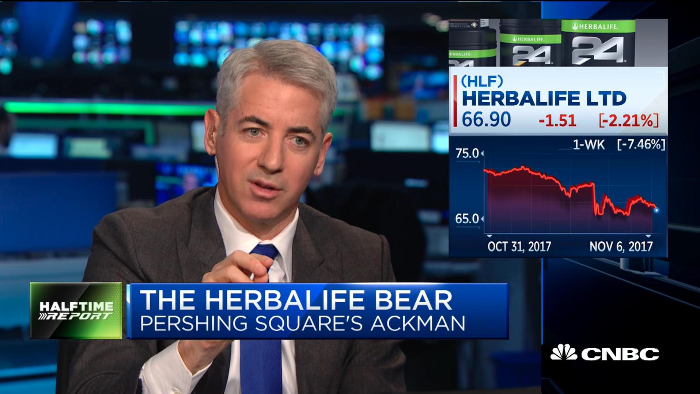
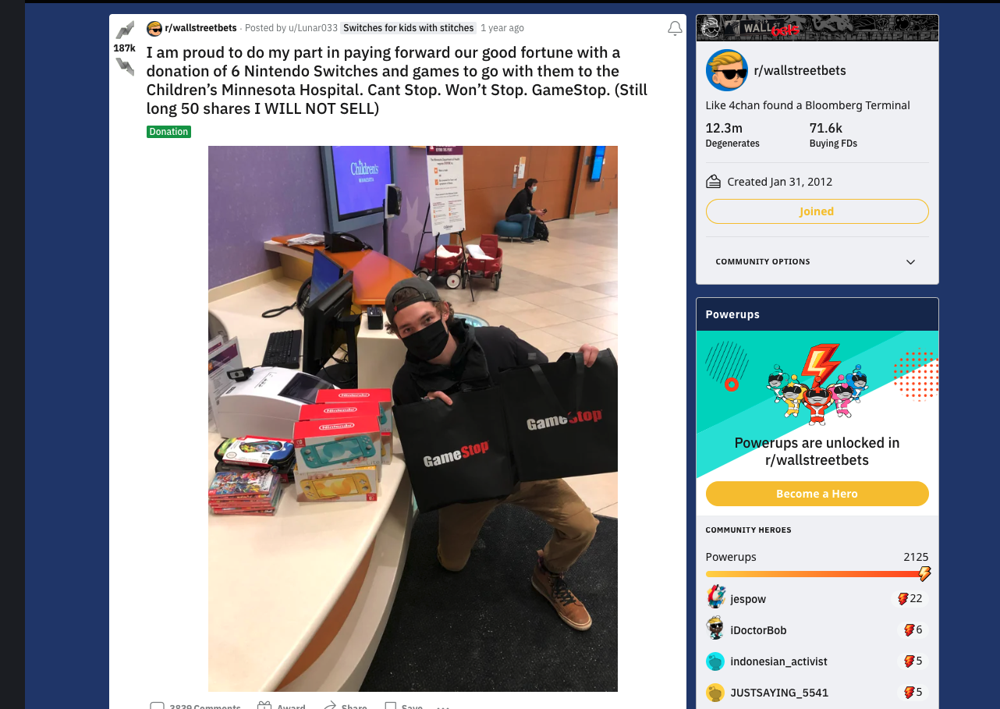

As previously stated, numerous brokerages suspended trading because they were unable to meet the clearing houses' margin
requirements. But consider how the media covered the situation versus what actually occurred.
The movement was made to seem like an unlawful internet assembly of individuals simply ganging up on banks by the
mainstream media. They claimed that they were engaging in illicit stock market manipulation. In actuality, banks do this
all the time when they go on CNBC or another business network to discuss their holdings. They appear on live television
to discuss businesses, and their words have the power to impact markets. Consider the instance of Bill Ackman, who
appeared on live television to discuss his short position in Herbal Life, and the stock fell as a result of the
broadcast.

People on social media were completely fabricating reports about brokerages colluding with hedge funds to halt GME
trade.
View the video to learn about some of the theories people had
Financial markets are not immune to the dangers of misleading information. When people, especially those in positions of
authority, spread incorrect information, it may be quite harmful.
Many people on the subreddit were thrilled following recent gains, but there were just as many people who were
disappointed. People that made a lot of money contributed back to their communities, such as Lunar033, who purchased
video games for sick children.
